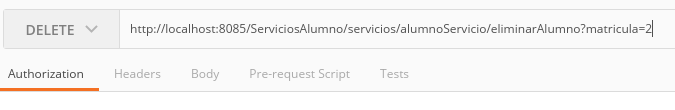

-
Servicios web (Angular/Aplicaciones Móviles).
Si tu proyecto necesita de servicios REST API, y se adapta a la persistencia que creamos anteriormente.
Empezaremos abriendo Eclipse y crearemos un nuevo proyecto web.
File → New → Proyect → Web → Dynamic Web Proyect
Next
Proyect Name: ServiciosAlumno
Target runtime: WildFly
FinishProyecto creado

Lo siguiente que sigue es importar todas las librerías necesarias de la carpeta recursos/serviciosweb/lib dentro de la carpeta WebContent/WEB-INF/lib

Dentro de esta carpeta de venir nuestra persistencia.jar y nuestra entidad.jar en caso de que venga aparte
En la carpeta WEB-INF creamos un nuevo archivo y lo llamamos web.xml abre el enlace y copia el código xml
En la linea 15 nos marca una advertencia, esto pasa porque falta el archivo log4j_csa.properties
Lo creamos en la carpeta raíz del proyecto ServiciosAlumnos/log4j_csa.properties

Buscamos la sección source, abrimos el enlace log4j_csa.properties, copiamos el contenido y lo guardamos.

Teniendo todo listo no queda más que empezar a programar.
En la carpeta Java Resources/src creamos dos nuevos packages
com.matco.manual.servicios
com.matco.manual.controllerDentro del paquete controller creamos una nueva clase Java y la llamamos Log4jInit, copiamos el de abajo y lo pegamos en nuestra nueva clase

Log4jInit.Java
package com.matco.manual.controller; import javax.servlet.http.HttpServlet; import javax.servlet.http.HttpServletRequest; import javax.servlet.http.HttpServletResponse; import org.apache.log4j.PropertyConfigurator; public class Log4jInit extends HttpServlet{ /** * Gestor de consola de la aplicación */ private static final long serialVersionUID = -1267172923511440093L; public void init() { String file = getInitParameter("log4j-init-file"); if (file!=null) { PropertyConfigurator.configure(file); } } public void doGet(HttpServletRequest req, HttpServletResponse res) { } }En el paquete servicios creamos una nueva clase llamada Generic esta clase es la que obtiene el archivo admintx_csa_aplicacion.properties que contiene las propiedades para conectarse a la base de datos de Oracle.

Generic.java
package com.matco.manual.servicios; public class Generic { public static final String archivoConfiguracionServicio = "admintx_csa_aplicacion.properties"; }Creamos otra nueva clase llamada AplicacionRest esta clase inicializa el path del URL de nuestro servicio Rest. Por ejemplo por el momento el url estaría así localhost:8085/ServiciosAlumnos/servicios/
AplicacionRest.java
package com.matco.manual.servicios; import javax.ws.rs.ApplicationPath; import javax.ws.rs.core.Application; @ApplicationPath("/servicios") public class AplicacionRest extends Application{ // Queda vacia }localhost:8085 Dirección del servicio
ServicioAlumnos Nombre del proyecto que incluye el servicio
servicios Nombre del servicio
@ApplicationPath variable para establecer el nombre de tu servicio
Creamos otra nueva clase llamada AlumnoServicios esta clase tendrá todos nuestros servicios y utilizara la persistencia creada
AlumnoServicios.java
package com.matco.manual.servicios; import java.util.List; import javax.ws.rs.*; import javax.ws.rs.core.*; import javax.xml.bind.annotation.XmlAccessType; import javax.xml.bind.annotation.XmlAccessorType; import javax.xml.bind.annotation.XmlRootElement; import com.matco.manual.facade.AlumnoFacade; import com.matco.manual.entity.Alumno; @XmlAccessorType(XmlAccessType.NONE) @XmlRootElement(name = "alumnoServicio") @Path("alumnoServicio") public class AlumnoServicios extends Generic{ AlumnoFacade alumnoFacade = new AlumnoFacade(archivoConfiguracionServicio); @POST @Path("guardarAlumno") @Produces(MediaType.APPLICATION_JSON) public Alumno guardarAlumno(Alumno tmp) throws Exception { int mat = alumnoFacade.guardarAlumno(tmp); System.out.println("Hasta aqui todo bien"); return alumnoFacade.obtenerAlumnoPorMatricula(mat); } @PUT @Path("modificarAlumno") public void modificarAlumno(Alumno tmp) throws Exception { alumnoFacade.modificarAlumno(tmp); } @DELETE @Path("eliminarAlumno") public void eliminarAlumno(@QueryParam("matricula") int matricula) throws Exception { Alumno tmp = new Alumno(); tmp.setMatricula(matricula); alumnoFacade.eliminarAlumno(tmp); } @GET @Path("obtenerTodosAlumnos") @Produces(MediaType.APPLICATION_JSON) public List <Alumno> obtenerTodosAlumnos() throws Exception { List<Alumno> res = alumnoFacade.obtenerTodosAlumnos(); return res; } }Copiando la clase no debería marcarte error, si eso pasa debes tener mal una importación.
Simbología:
@XmlRootElement Nombre del servicio raíz en el xml
@Path("") Nombre del servicio para el URL
@POST Servicio REST POST, indica que esta funcion es para insertar datos
@GET Servicio REST GET, indica que esta funcion es para obtener datos
@PUT Servicio REST PUT, indica que esta funcion es para hacer update (pude haber retorno)
@DELETE Servicio REST PUT, indica que esta funcion es para eliminar objetos
@Produces(MediaType.APPLICATION_JSON) Parámetro para indicar que vá a retornar la funcion, en este caso retornaría un JSON
@QueryParam("") Sirve para obtener un parámetro con un nombre definidoEjecutamos el proyecto con el servidor de WildFly
Next
Finish.
Hacemos una petición al servicio get all http://localhost:8085/ServiciosAlumno/servicios/alumnoServicio/obtenerTodosAlumnos
Debería mostrarte un resultado de tipo Json en el navegador
Vamos a probar los demás servicios para comprobar que funcionan correctamente, para eso abrimos un programa llamado Postman lo puedes descargar e instalar, o instalarlo como aplicación de chrome (ese es mi caso).
Seleccionamos el método GET y en el url pegamos el servicio que probamos en el navegador
Damos clic en Send y debería mostrarnos un Json con la consulta hecha.
Ahora probaremos el servicio guardarAlumno
Abrimos una nueva pestaña, seleccionamos el método POST y pegamos en el URL el servicio guardarAlumno
http://localhost:8085/ServiciosAlumno/servicios/alumnoServicio/guardarAlumnoEste método nos pide un objeto Json y para mandarlos tenemos que definir en el Header del envió el método Content-Type:application/json sin este atributo nos marcaría error al momento de hacer la petición.
Hacemos clic en Header y añadimos la nueva key
Agregamos el json en la pestaña Body
{ "nombres": "Usuario", "apellidoPaterno": "De", "apellidoMaterno": "Prueba", "creadoPor": "user" }Hacemos la petición
El programa debería responderte con un Json que seria el resultado de la petición
El status debería ser 200 OK
El servicio funciona!Probamos el servicio modificarAlumno
Hacemos los mismos pasos que el servicio anterior, solo que esta vez seleccionamos el método PUT
URL: http://localhost:8085/ServiciosAlumno/servicios/alumnoServicio/modificarAlumno{ "matricula": 2, "nombres": "UsuarioModifcado", "apellidoPaterno": "De", "apellidoMaterno": "Prueba_V1.0", "activo": null, "creadoPor": "root", "modificadoPor": "toor", "fechaHoraCreacion": "2019-06-05", "fechaHoraModificacion": "2019-06-06" }Hacemos la petición
No regreso nada pero podemos ver como el status es 204 No Content este estatus significa que la petición se hizo correctamente pero no retorna ningún valor, ¿como nos damos cuenta de que si se hizo el cambio?, hacemos una petición GET
Como vez el servicio funciono correctamente!
Por ultimo solo nos queda probar el servicio eliminarAlumno hacemos los mismos pasos pero seleccionamos el método DELETE
Este servicio nos pide como parámetro una matricula se define agregando el símbolo "?" despues del nombre del servicio, luego el nombre del atributo más un "=" y despues el valor
eliminarAlumno?matricula=2
URL: http://localhost:8085/ServiciosAlumno/servicios/alumnoServicio/eliminarAlumno?matricula=2
Hacemos la petición.
Debería responder con un status 204 Not Content y todo estará perfectoHacemos una consulta para confirmar el que servicio funciono
Como vez el servicio funciono correctamente!
Puedes continuar con el Manual PrimeNG for Angular. Fin.